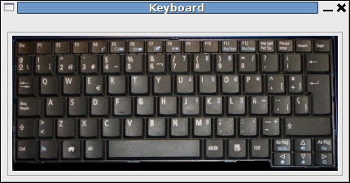

Para realizar pruebas con JDE, he creado el esquema keyboard. Permite que cualquier otro esquema tenga acceso al teclado. Esto resulta muy útil para las pruebas. Por ejemplo se puede mover un robot con las teclas, usar un menú, cambiar los modos de funcionamiento, etc.
En el siguiente vídeo se puede ver una demostración de uso. Se ha modificado el esquema de pruebas de la tarjeta freeleds, de manera que al pulsar las teclas se cambia el modo de funcionamiento:

Además, se ha incorporado un “teclado virtual”. Mediante pulsaciones del ratón en las teclas virtuales, se obtiene el mismo efecto que si se pulsasen en el teclado real.
Las fuentes están disponibles aquí.